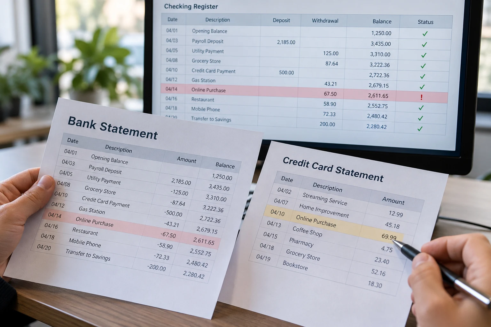

Bank Reconciliation When Your Books Do Not Match
Your bank balance and bookkeeping balance may differ because of timing, missing entries, duplicates or errors. The comparison only becomes meaningful when it uses the same account and date. Reconciliation explains legitimate outstanding items and corrects recording problems so the adjusted balances agree.
Check timing before assuming something is wrong
A check entered in the books may not yet have cleared the bank. A recorded deposit may arrive after the statement cutoff. The bank’s available balance can also differ from its posted statement balance. Compare a specific statement closing date with the books at that date, rather than comparing today’s bank screen with an older financial report.
Search for activity that was missed or counted twice
Bank fees, interest, manual transactions and incomplete feed imports commonly explain differences. A customer payment can be entered once manually and again from the bank feed. A transfer may also be recorded in the wrong account. Review the opening balance and the last completed reconciliation to identify when the difference first appeared.
Resolve the cause and retain the reconciliation
Match statement entries with the books, identify outstanding items and document supported corrections. Do not enter an unexplained expense or income adjustment merely to force a zero difference. IRS guidance describes monthly reconciliation as a way to identify errors and account for bank charges and outstanding transactions. The completed report should show why the balance is correct and what, if anything, remains in transit.
Compare the same date and the same kind of balance
A bank may display an available balance that includes holds or pending activity. A statement closing balance shows a different cutoff. The bookkeeping register may include checks already issued but not yet cleared. Before investigating a difference, identify the exact statement account, closing date and balance being reconciled.
For illustration, a statement closes at $10,000 and the books show $9,500 because a supported $500 check has not cleared. That outstanding check may explain the difference. It does not automatically mean either record is wrong. If the check remains outstanding unusually long, investigate its status rather than carrying it forward indefinitely.
Follow a bank reconciliation sequence
Begin with the last completed reconciliation and confirm that its closing balance still agrees with the next period’s opening balance. Then compare deposits and withdrawals with the statement. Identify legitimate outstanding items separately from missing fees, duplicate entries, incorrect amounts and payments assigned to another account.
An imported transaction can already have a matching invoice payment or bill payment in the books. Adding it again creates a recording problem rather than completing the reconciliation. Review the linked records before removing anything, since deleting a payment can also change an invoice or bill balance.
Keep the explanation with the finished period
The finished reconciliation should connect the statement balance, supported outstanding items and bookkeeping balance. Save the report and supporting correction notes so the following month has a reliable starting point. If an older reconciled entry changes, identify the affected periods before treating the current difference as a new issue.
A zero difference alone is not evidence that every underlying transaction is correct. Two errors can offset, or an unsupported adjustment can conceal the cause. A sound review follows the activity and preserves its explanation instead of treating a matching total as the only objective.